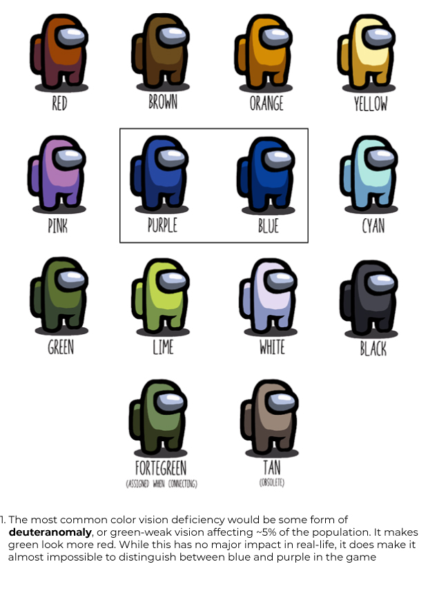
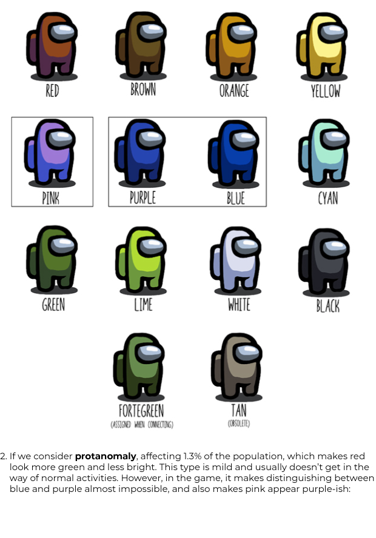
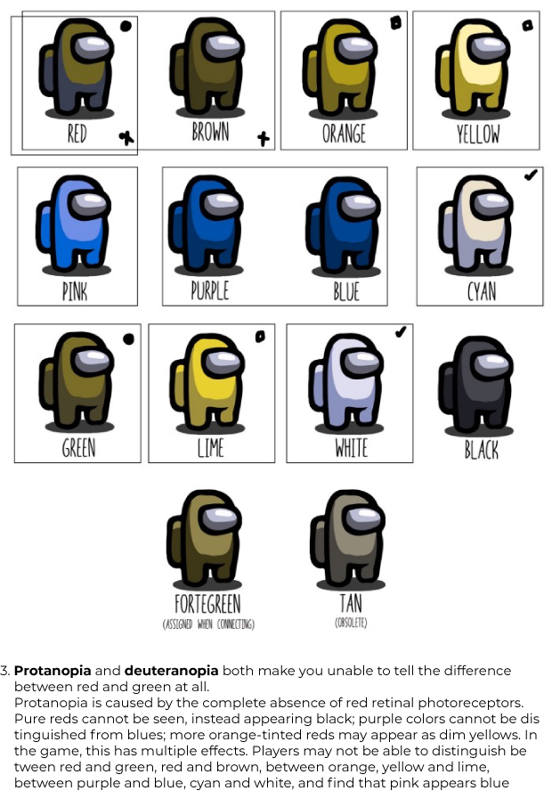
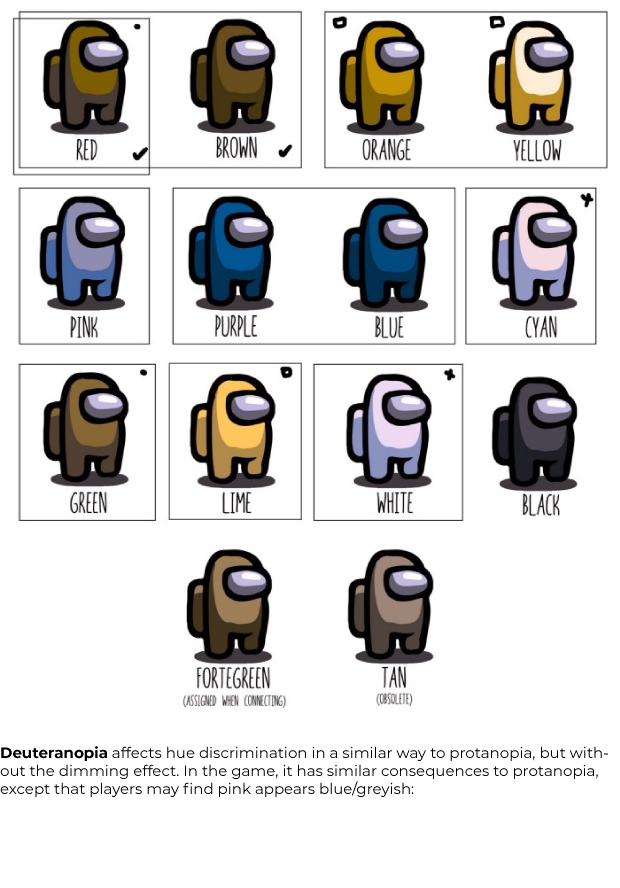
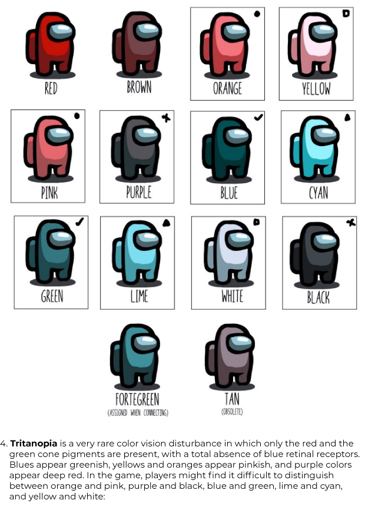
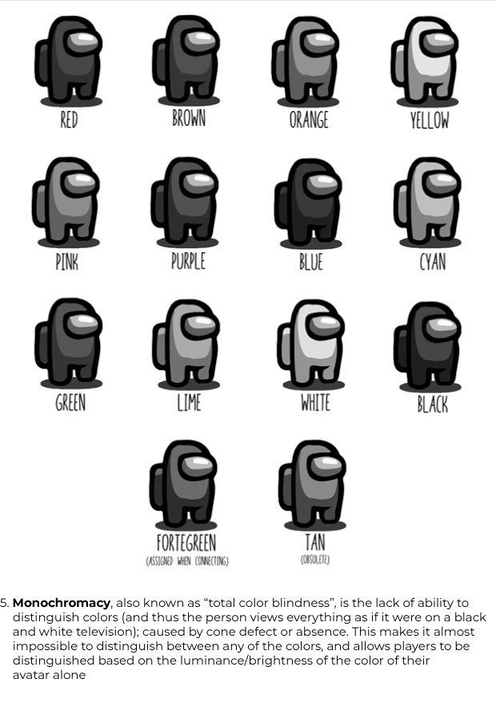

Color blindness (color vision deficiency) is the decreased ability to see color or differences in color. Based on statistics from colourblindawarness.org, there is general agreement that worldwide 8% of men and 0.5% of women have a color vision deficiency. Worldwide, there are over 300 million people with some form of color blindness.
To put these statistics in context, an all-boys school in the Home Counties of England with 1000 pupils would have approximately 100 color deficient students. 12–13 would be deuteranopes, 12–13 would be protanopes, 12–13 would have a form of protanomaly and 62 would have a form of deuteranomaly. About half of those with an anomalous condition would have a moderate to severe form of deficiency.
This plays a role in user experience, where designers often need to consider the consequences of their color choices for color-blind people. As designers, there are multiple resources that one can make use of, from Adobe Illustrator’s Color-Blind Proof Setup, to sites like ColorBrewer that can help you select a colorblind-friendly color scheme.
But to what extent do colors impact a design or a game? To explore that,
I decided to do a case study on the massively popular game Among Us, which relies on color encoding as a primary identifier for players.
If you haven’t been living under a rock, you’ve probably heard of, and maybe even played, Among Us. For the unaware, the game is an online multiplayer social deduction game set in a space-themed setting, where players, or crewmates must complete tasks while trying to find the impostor among them. The imposter meanwhile can sabotage the environment, hindering crewmatse from completing tasks and killing them off one by one to win the game.
To play the game, players can create or join virtual rooms on different servers. There can be a maximum of 10 players in one room, and each player can pick a different color. Currently, Among Us offer 12 color variants that users can select from:The process to identify an Impostor is to discuss and decide who the Impostor can be within the game through a chatbox, and vote on who the Impostor is and get them ejected from the spacecraft.
Colors remain the primary identifier for players for this purpose, as users commonly use names such as ‘I’, ‘No one’, ‘Someone’ or simply color names themselves, like a player with a green avatar sets their name as ‘Red’, or a player with a purple avatar sets their name as ‘Black’.
This video shows the chaos when players simply use pronouns as their avatar names. This makes it difficult to identify the Impostor in the chat with just the player name and leads to confusion, which is why players rely on colors to identify others.Avatar names and colors contrast, creating confusion in identifying players (Source: Google Images)In this scenario, where colors play a vital role in the game, color blindness can impact the players’ performance and cognitive load, as it becomes difficult to distinguish between several players.
I recreated the color scheme used by Among Us and tested it using Coblis for various types of color blindness.
The most common type of color blindness makes it hard to tell the difference between red and green. There are 4 types of red-green color blindness: Deuteranomaly is the most common type of red-green color blindness. It makes green look more red. Protanomaly makes red look more green and less bright. Protanopia and deuteranopia both make you unable to tell the difference between red and green at all
Other types of color blindness include:
Blue- Yellow color blindness
This less-common type of color blindness makes it hard to tell the difference between blue and green, and between yellow and red. There are 2 types of blue-yellow color blindness: Tritanomaly makes it hard to tell the difference between blue and green, and between yellow and red. Tritanopia makes you unable to tell the difference between blue and green, purple and red, and yellow and pink. It also makes colors look less bright.
Monochromacy
If you have complete color blindness, you can’t see colors at all. This is also called monochromacy, and it’s quite uncommon. Depending on the type, you may also have trouble seeing clearly and you may be more sensitive to light.
In such cases, how do the players with color blindness perceive the colors in Among Us?
JQslider






What can the developers do to make the game more accessible for color-blind people:
Using additional identifiers for players, like this technique Uno used incorporating ColorAdd, a color identification system for color-blind people. Similarly, different colors in Among Us could have symbols attributed to them, allowing easier identification. The symbols could be shown with the avatar’s name or on the avatar itself.
A simple solution would be displaying the name of the avatar’s color in brackets similar to how the name of the player is displayed. While this would take some tweaking to display both player name and color name elegantly, it could be possible solution.
While the developers are already working on this and a color-blind mode is already available in the public beta version, it is interesting to note the difference an inclusive design can make. This video, for example, shows the complete chaos that occurs when color and name both cannot be used as an identifier.
I chose Among Us for a case study as the game is increasing in popularity day by day, and hence has a large audience. This should make testing color-blind support easier, and so I’m keen on seeing how the Among Us developers will be addressing this.
All sources linked in the article. Primary image of avatars and color scheme made in Adobe Illustrator, colors and hex-codes for the avatars were taken from the Among Us Fandom page. Various color-blind versions made using Coblis. Information for color-blindness has been taken from Wikipedia, ColorBlindness.com, National Eye Institute.